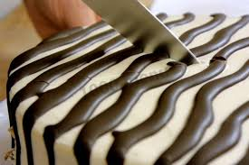

Торт «Зебра»
Потрясающий торт! Красивый, вкусный, нежный. Из указанного количества ингредиентов получается 6–8 порций.
Ингридиенты:

тесто:
150 г сахара
150 г сливочного масла
4 яйца
300 г сметаны (10–15%)
250–300 г муки
2 ч.л. разрыхлителя
30 г какао
крем:
300–400 г сметаны (10–20%)
150 г сахара
2 ч.л. ванильного сахара
глазурь:
100 г сливочного масла
50 мл молока
100 г сахара
50 г какао
Приготовление
Готовим тесто.
Масло растереть с сахаром.
Добавить яйца.
Перемешать.
Добавить сметану.
Перемешать.
Добавить разрыхлитель и муку, замесить не очень густое тесто.
Тесто разделить на две части.
В одну часть добавить какао, перемешать.
Форму для выпечки (у меня форма диаметром 24 см) смазать растительным маслом
(силиконовую форму можно не смазывать).
Вылить 1–2 ст.л. светлого теста в середину формы.
В серединку светлого теста вылить 1–2 ст.л. темного теста.
Наливать тесто таким образом, пока форма не заполнится по диаметру
(из указанного количества ингредиентов получается 2 коржа).
Поставить в разогретую до 180 градусов духовку.
Выпекать в течение 20–25 минут.
Готовим крем.
Сметану смешать с сахаром и ванильным сахаром.
Выпеченный корж смазать кремом.
Накрыть вторым коржом.
Готовим глазурь.
Масло растопить.
Добавить молоко.
Добавить сахар.
Перемешать.
Добавить какао.
Перемешать.
Варить до загустения.
Готовый торт покрыть глазурью.
Желательно, дать торту пропитаться (поставить в холодильник на 4–6 часов).
Торт можно украсить при помощи трафарета.
Нарисовать полоски, вырезать.
Посыпать сахарной пудрой.
Аккуратно убрать трафарет.